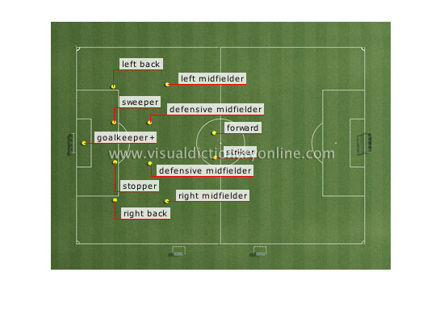

Positions
Forward
Offensive position usually placed behind the striker; this player uses speed to make crisp accurate passes.
Right Back
Defensive position that covers the right side of the field; this player's role is to impede an opponent's progress toward the goal.
Right Midfielder
Center position that plays on the right side of the field; this player uses playmaking skills to pass the ball to the forwards.
Defensive Midfielder
Center position; this player tries to take the ball from the opponent before that player reaches the defenders and quickly mount a counterattack.
Goalkeeper
Position whose role is to prevent the ball from entering the goal; this is the only player allowed to touch the ball with the hands.
Striker
Offensive position whose main role is to score goals; this player plays a forward position in the opposing team's zone.
Left Midfielder
Center position that plays on the left side of the field; this player uses playmaking skills to pass the ball to the forwards.
Defensive Midfielder
Center position; this player tries to take the ball from the opponent before that player reaches the defenders and quickly mount a counterattack.
Left Back
Defensive position that covers the left side of the field; this player's main role is to slow or stop an opponent's progress toward the goal.
Stopper
Position that stays back, marks an opposing forward and prevents that player from being in a scoring position.
Sweeper
Position that stays back, anticipates defensive mistakes by teammates and makes up for them; this player is not required to closely mark an opposing player.